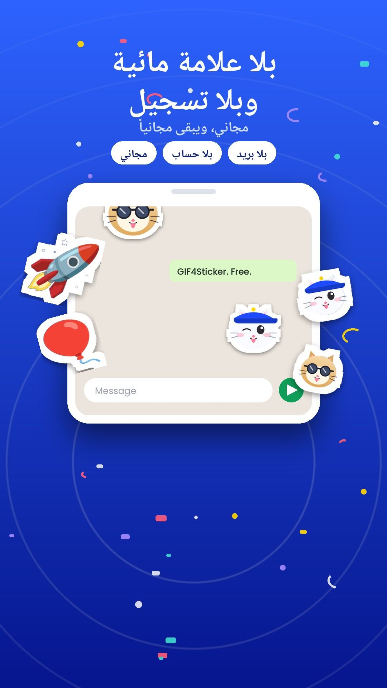
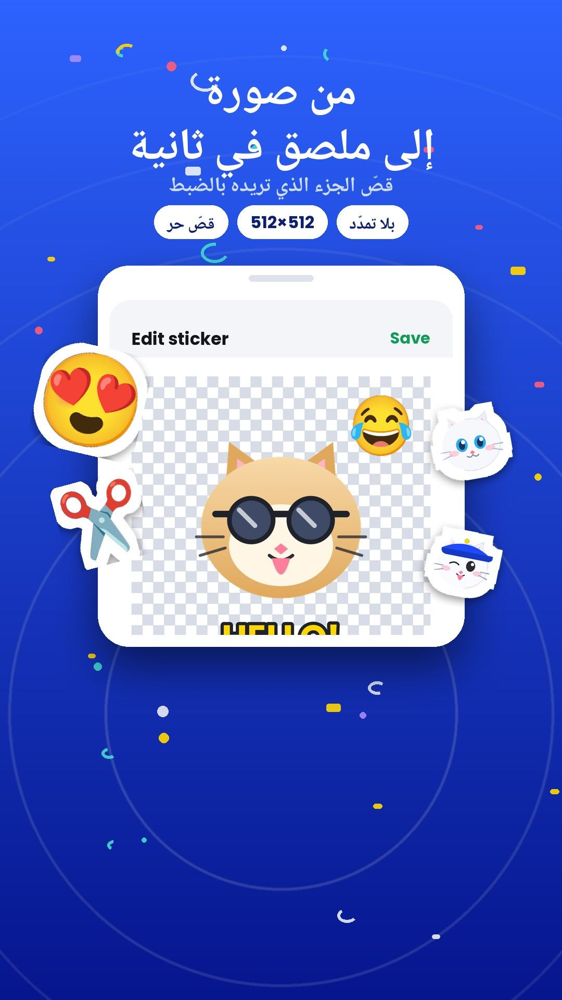
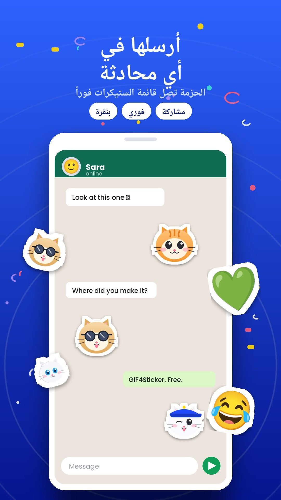
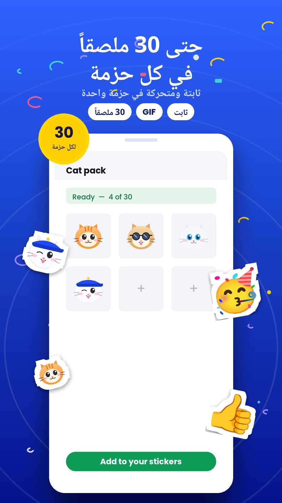

ستيكرات وملصقات متحركة جيف من الفيديو والصور
متاح على Google Playالإصدار 2.2



اضغط على أي لقطة لتكبيرها
GIF Sticker Maker تطبيق أندرويد طوّرته بنفسي من الصفر بلغة Kotlin وJetpack Compose. فكرته بسيطة: اللحظة اللي ضحّكتك في مقطع فيديو أو GIF تستاهل تصير ستيكر متحرك ترسله لأصحابك.
تختار المقطع، تقص الثانية اللي تهمك، تكتب كلمتك بخط عربي، وتكون حزمة الستيكرات جاهزة في ثوانٍ. وفيه إزالة خلفية بالذكاء الاصطناعي للصور، وإطاراً بإطار للفيديو.
للتطبيق موقع رسمي فيه الشروحات والأسئلة الشائعة: gifsticker.me.
اختر أي مقطع واحتفظ بالثانية اللي تهمك، مع سرعة من 0.5x إلى 2x.
تحويل الفيديو إلى ستيكر ←مكتبة GIF مدمجة للبحث، أو استخدم ملفاتك من الجوال.
تحويل GIF إلى ستيكر ←للصور، وإطاراً بإطار للفيديو.
إزالة خلفية الصور والفيديو ←11 خطاً و18 لوناً لكتابة كلمتك فوق الستيكر.
ستيكرات كتابة بخطوط عربية ←حزم ثابتة وأخرى متحركة، جاهزة للإرسال.
طريقة عمل ستيكرات متحركة ←افتح التطبيق وابدأ فوراً، بدون حساب.
الأسئلة الشائعة ←